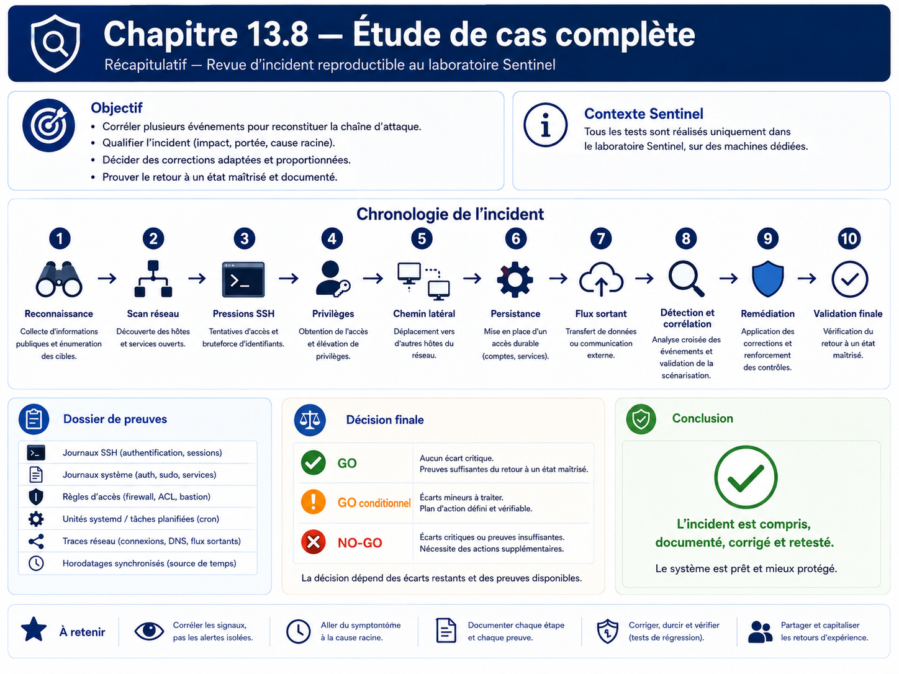

Chapitre 13.8 — Étude de cas complète
Campagne 13 — Attaques et défense
« Un incident n'est compris que lorsque les actions, les traces et les décisions racontent la même histoire. »
Vous êtes ici
PARTIE III — Mise en situation
Campagne 13 — Attaques et défense
13.1 Reconnaissance
13.2 Scan réseau
13.3 Brute force SSH
13.4 Escalade de privilèges
13.5 Mouvements latéraux
13.6 Persistance
13.7 Exfiltration
► 13.8 Étude de cas complète
Objectifs pédagogiques
À l'issue de ce chapitre, vous serez capable de :
- conduire un scénario d'incident de bout en bout dans le laboratoire ;
- réutiliser les démonstrations bornées des chapitres 13.1 à 13.7 sans introduire de nouvelle technique offensive ;
- construire une chronologie à partir de plusieurs sources de journaux ;
- distinguer fait observé, hypothèse et conclusion ;
- corriger les faiblesses mises en évidence puis rejouer les tests ;
- produire un dossier d'incident exploitable par une équipe d'exploitation ou de sécurité.
Pourquoi ce chapitre existe
Un contrôle isolé peut fonctionner et l'ensemble rester fragile. À l'inverse, une alerte isolée peut sembler grave alors que la chronologie complète montre un test légitime ou un incident contenu.
Cette étude de cas assemble donc les compétences acquises : reconnaissance, exposition réseau, authentification, privilèges, segmentation, persistance, flux sortants, journaux, audit et supervision.
Le scénario ne cherche pas à « compromettre pour compromettre ». Il met en scène des événements contrôlés et connus à l'avance, puis demande au défenseur de reconstruire ce qui s'est passé et de prouver que les corrections fonctionnent.
Règles du scénario
Le périmètre est strict :
- uniquement les VM du laboratoire Sentinel ;
- uniquement les comptes de test prévus ;
- aucune donnée réelle ;
- aucune liste de mots de passe ;
- aucun exploit de vulnérabilité ;
- aucun mécanisme furtif ;
- aucune tentative de contournement d'un refus ;
- toutes les modifications temporaires sont documentées et supprimées à la fin.
Architecture de référence
Préparer le dossier d'incident
Créez une arborescence locale sur votre poste d'administration :
incident-13.8/
├── 00-contexte/
├── 01-baseline/
├── 02-evenements/
├── 03-journaux/
├── 04-chronologie/
├── 05-corrections/
└── 06-retest/
Chaque preuve doit préciser :
- hôte ;
- heure UTC ;
- commande ou source ;
- résultat ;
- interprétation.
Phase 0 — Baseline
Avant le scénario, collectez :
Sur Sentinel :
date -u
hostnamectl
sudo ss -lntup
sudo firewall-cmd --list-all
sudo systemctl is-active sentinel sshd rsyslog
sudo sshd -T | grep -E 'permitrootlogin|passwordauthentication|pubkeyauthentication|maxauthtries'
Pour l'application :
sentinel --version
sentinel status --format text
Depuis un client légitime, vérifiez /health, /ready et /metrics selon la configuration TLS/mTLS active.
La baseline doit être verte avant de commencer.
Phase 1 — Reconnaissance bornée
Depuis Kali :
dig +short sentinel.sentinel.lab A
openssl s_client -connect sentinel.sentinel.lab:443 -servername sentinel.sentinel.lab </dev/null
Si le service est publié sur un autre port dans votre laboratoire, utilisez ce port réel.
Question d'analyse : quelles informations sont nécessaires au protocole et lesquelles pourraient être réduites ?
Phase 2 — Vérification de l'exposition réseau
Toujours depuis Kali :
nmap -Pn -p 22,443,8443,9100 sentinel.sentinel.lab
Ne scannez pas d'autres plages. Comparez immédiatement le résultat à la baseline ss + Firewalld.
Événement à consigner : tout port accessible depuis Kali qui n'était pas attendu dans la matrice de flux.
Phase 3 — Échecs d'authentification contrôlés
Utilisez le compte de test prévu au chapitre 13.3 et produisez seulement quelques échecs manuels. Arrêtez dès que les journaux permettent l'analyse.
Puis, sur Sentinel :
sudo journalctl -u sshd --since "-10 min" --no-pager
sudo faillock --user alice
Question d'analyse : le comportement est-il visible, contenu et distinguable d'un refus par politique ?
Phase 4 — Délégation excessive de laboratoire
Reprenez le scénario borné du chapitre 13.4 : une règle sudo temporaire autorise uniquement la lecture de /root/sentinel-lab-proof.txt avec /usr/bin/cat.
Collectez :
sudo -l -U alice
sudo journalctl --since "-10 min" | grep -Ei 'sudo|COMMAND='
Puis retirez immédiatement la règle temporaire après la preuve.
Question d'analyse : le droit était-il proportionné au besoin ?
Phase 5 — Test de segmentation
Vérifiez deux chemins :
- un accès direct qui doit être refusé ;
- le chemin d'administration via bastion qui doit réussir.
Exemples :
nc -vz -w 3 sentinel.sentinel.lab 22
ssh -J admin@bastion.sentinel.lab admin@sentinel.sentinel.lab
Adaptez l'attendu à votre architecture réelle.
Phase 6 — Persistance explicite de laboratoire
Créez puis activez l'unité sentinel-lab-persistence.service définie au chapitre 13.6. Vérifiez son marqueur, ses journaux et, si disponible, sa détection par auditd/AIDE.
Puis supprimez-la complètement.
Question d'analyse : quelles sources permettent de prouver la création, l'activation et la suppression ?
Phase 7 — Sortie de donnée synthétique
Émettez uniquement le marqueur Rsyslog défini au chapitre 13.7 :
logger -t sentinel-lab-egress 'SENTINEL-LAB-EGRESS-MARKER'
Sur le collecteur :
sudo grep -R 'SENTINEL-LAB-EGRESS-MARKER' /var/log/remote/ 2>/dev/null
Question d'analyse : quelle différence existe entre « un flux sortant autorisé » et « une exfiltration » ?
La réponse doit mentionner au minimum la nature de la donnée, l'autorisation, la destination et le contexte.
Phase 8 — Construire la chronologie
Rassemblez les événements dans un tableau unique :
| Heure UTC | Source | Hôte | Événement | Preuve | Interprétation |
|---|---|---|---|---|---|
| T0 | baseline | Sentinel | services actifs | systemctl |
état sain |
| T1 | Kali | Sentinel | reconnaissance TLS | journal/service | observation |
| T2 | Kali | Sentinel | connexions multiports bornées | réseau | scan contrôlé |
| T3 | Kali | Sentinel | échecs SSH | journald/PAM | pression auth |
| T4 | alice | Sentinel | commande sudo autorisée | sudo/audit | délégation test |
| T5 | admin | bastion/Sentinel | accès via rebond | sshd centralisé | chemin légitime |
| T6 | root lab | Sentinel | unité temporaire | systemd/audit/AIDE | persistance simulée |
| T7 | rsyslog | observabilité | marqueur synthétique | collecteur | sortie autorisée |
N'utilisez pas les heures approximatives si les journaux permettent mieux.
Phase 9 — Formuler les constats
Chaque constat suit ce modèle :
ID : F-01
Fait observé : ...
Risque : ...
Cause : ...
Contrôle existant : ...
Correction proposée : ...
Preuve attendue après correction : ...
Classez les constats par impact et vraisemblance. Un événement de laboratoire prévu n'est pas une vulnérabilité ; il peut néanmoins révéler qu'un contrôle manque ou produit trop peu de traces.
Phase 10 — Corriger
Les corrections restent minimales et ciblées :
- fermer un flux non nécessaire ;
- restreindre une délégation sudo ;
- renforcer une politique SSH déjà prévue ;
- compléter une règle de journalisation ou d'audit utile ;
- supprimer une activation systemd inattendue ;
- documenter une dépendance réseau légitime.
Ne modifiez pas Sentinel Python pour compenser une faiblesse qui appartient à Firewalld, SSH, sudo ou systemd.
Phase 11 — Retester exactement les mêmes scénarios
Le retest doit reprendre les mêmes commandes et les mêmes attentes.
Le dossier final doit montrer :
- ce qui échouait ou était trop exposé avant ;
- la correction ;
- le résultat après ;
- l'absence de régression sur les fonctions légitimes.
Vérifications de non-régression
À la fin :
sudo systemctl is-active sentinel sshd rsyslog
sudo firewall-cmd --check-config
sudo visudo -c
sentinel --version
sentinel status --format text
Puis vérifiez selon votre architecture :
/health;/ready;/metrics;- authentification mTLS légitime ;
- intégration FreeIPA ;
- centralisation Rsyslog ;
- supervision Prometheus ;
- accès d'administration via bastion.
Livrables
Le rendu de la campagne 13 contient :
- la baseline initiale ;
- la matrice de flux ;
- la chronologie ;
- les journaux sélectionnés ;
- les constats ;
- les corrections ;
- les résultats de retest ;
- une conclusion de qualification.
Conclusion de qualification
Utilisez trois états :
- GO : contrôles conformes, scénarios bornés détectés ou contenus comme attendu ;
- GO conditionnel : écarts résiduels documentés avec risque accepté et action planifiée ;
- NO-GO : contrôle essentiel absent, contourné par un scénario du laboratoire ou impossible à prouver.
Jalon Sentinel
État de départ : Sentinel 1.1.0, avec TLS/mTLS, intégration au socle, packaging/déploiement et métriques déjà disponibles.
Besoin : produire et corréler des traces d'incident sur des scénarios d'attaque contrôlés.
Modification applicative : aucune modification Python requise. Les éventuels changements portent sur les politiques du socle et la configuration d'infrastructure.
Preuves : journaux SSH/PAM, sudo, systemd, auditd, AIDE, Rsyslog, Firewalld et métriques selon les scénarios.
Échec attendu : les chemins non autorisés restent refusés ; les modifications temporaires sont détectables ; les contrôles légitimes continuent de fonctionner.
Livrable : dossier d'incident complet et environnement remis en état.
Impact sur Sentinel
Cette campagne valide la capacité de l'environnement Sentinel à contenir, observer et expliquer des événements hostiles ou anormaux sans introduire volontairement de vulnérabilité dans le produit.
Elle prépare directement la campagne 14 : le projet final pourra réutiliser les preuves et les méthodes de test sans dépendre d'un environnement volontairement compromis.
Remise en état finale
Avant de clôturer :
- aucune règle sudo de laboratoire ;
- aucune unité
sentinel-lab-persistence; - aucun fichier
/tmp/sentinel-lab-*; - aucun marqueur de test actif ;
- Firewalld conforme à la matrice validée ;
- comptes de test déverrouillés si nécessaire ;
- Sentinel, SSH, Rsyslog et supervision opérationnels.
Conservez les preuves hors des emplacements de production du service.
Synthèse
- la campagne 13 étudie une attaque comme une chaîne d'événements, pas comme une collection d'outils ;
- chaque scénario offensif est volontairement borné et sert à exercer un contrôle défensif ;
- les preuves doivent être corrélées entre réseau, identité, système et observabilité ;
- une correction n'est acceptée qu'après retest et contrôle de non-régression ;
- Sentinel reste en
1.1.xet ne devient jamais une application volontairement vulnérable.
Navigation
← 13.7 — Exfiltration · 14.1 — Déployer Sentinel sur une AlmaLinux minimale →
Schéma récapitulatif
